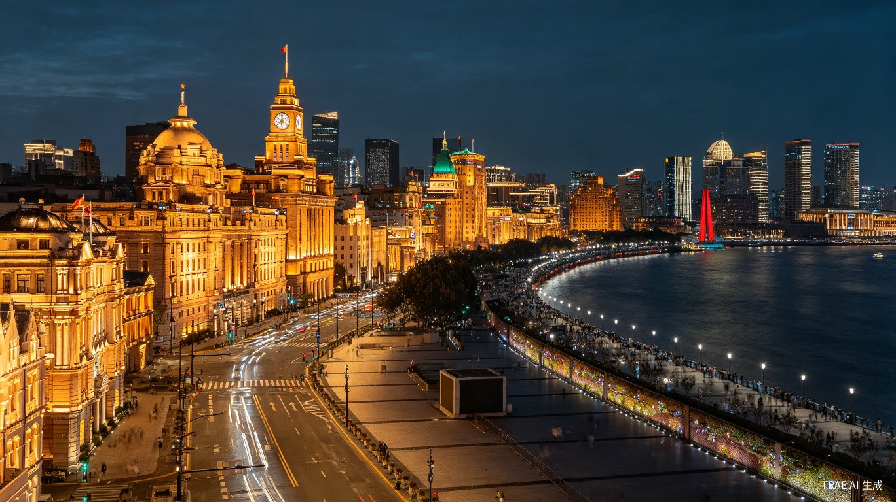
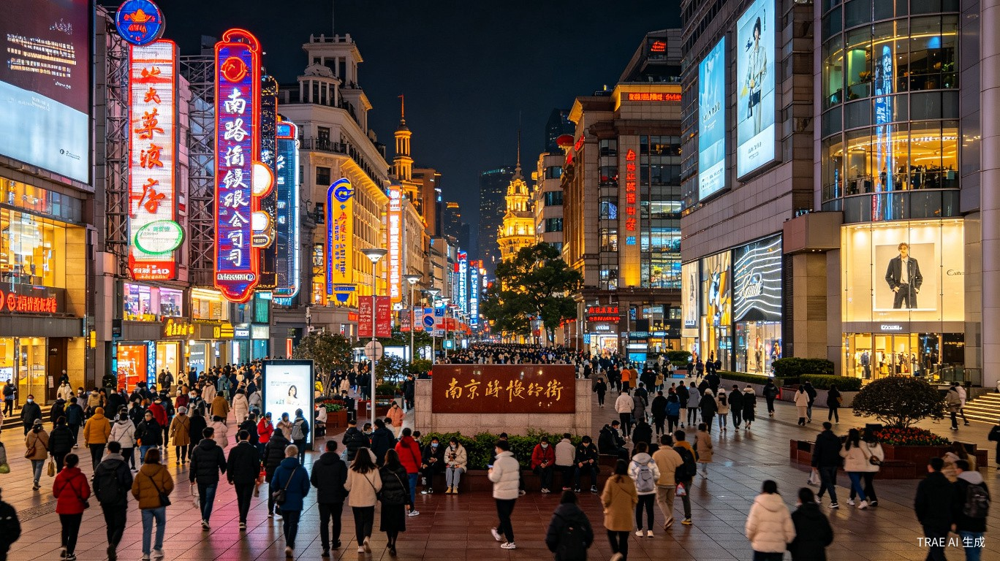
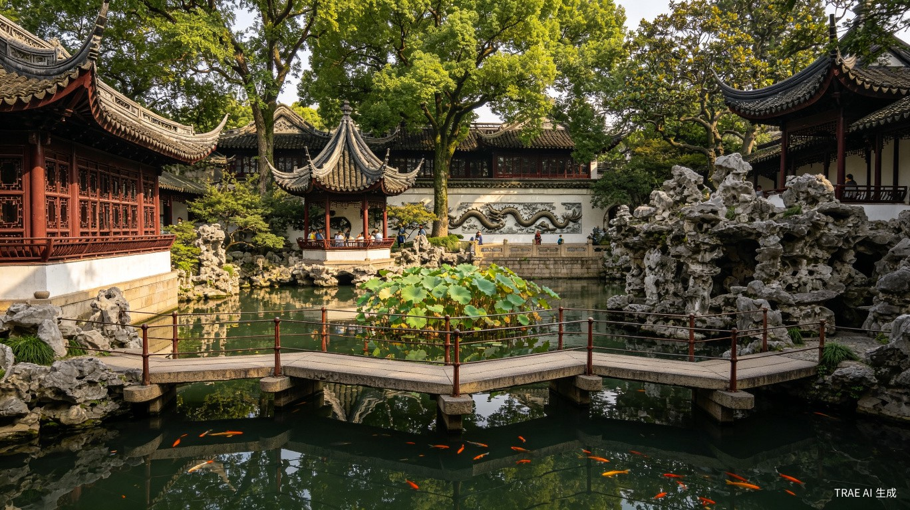
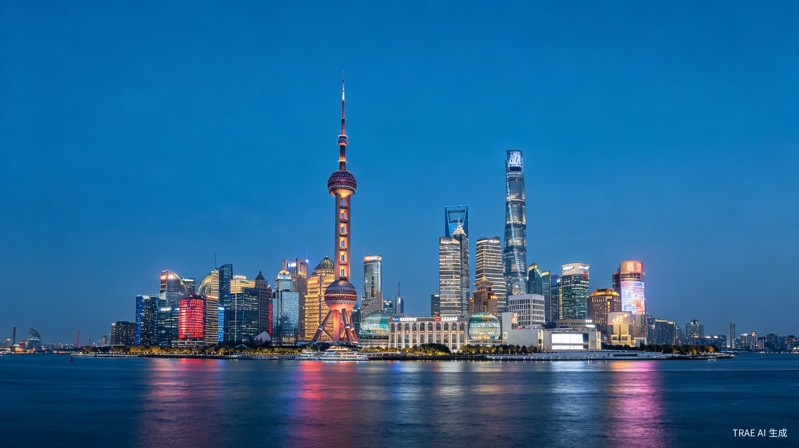

China's most cosmopolitan city, where Art Deco grandeur lines the Bund and futuristic towers pierce the sky across the Huangpu River.
From imperial Beijing to the dazzling metropolis of the East.

Shanghai's most iconic waterfront promenade, showcasing 26 colonial-era buildings in Gothic, Baroque, and Art Deco styles on one side, and the futuristic Pudong skyline including the Oriental Pearl Tower and Shanghai Tower on the other.
Walk the 1.5-kilometer promenade at sunset for the best lighting. The buildings illuminate after dark, creating a magical atmosphere perfect for family photos. Cross the river via the Bund Sightseeing Tunnel for a fun light-show experience kids will love. Allow 1-2 hours for a relaxed evening stroll.

China's premier shopping street stretches 5.5 kilometers through the heart of Shanghai. The eastern pedestrian section buzzes with neon signs, flagship stores, and century-old shops that have served customers for over a century.
Start from People's Square and walk east toward the Bund. Browse flagship international brands and traditional silk boutiques. Stop at the iconic No. 1 Food Store for Chinese delicacies. The evening neon displays transform the boulevard into a dazzling spectacle. Great for all ages with plenty of rest stops and cafes. Allow 2-3 hours.
Discover the layers of history and modernity that define this extraordinary city.

A Ming Dynasty masterpiece built in 1559, this classical Chinese garden features exquisite pavilions, zigzag bridges designed to confuse evil spirits, and the famous Exquisite Jade Rock. The surrounding Old Street recreates traditional Shanghai commerce.
Explore the winding paths, cross the zigzag bridges, and find the Exquisite Jade Rock — a porous stone with natural holes. Visit the surrounding Yuyuan Bazaar for souvenirs, tea, and street food. Try xiaolongbao (soup dumplings) at a nearby teahouse. Best visited in the morning to avoid crowds. Allow 2-3 hours including the bazaar.

Rising 468 meters above Pudong, this distinctive TV tower with its spherical observation decks has been Shanghai's landmark since 1994. The transparent glass-floor observation deck at 259 meters offers thrilling views straight down.
Visit the transparent glass-floor deck at 259 meters for a thrilling experience — brave family members can stand on the see-through floor. The Shanghai Municipal History Museum at the base takes you through the city's transformation from fishing village to metropolis. On clear days, the panorama is breathtaking. Allow 2-3 hours including the museum.
Nanjing Road transforms into a river of light after dark, with neon signs, the century-old No. 1 Department Store, and the iconic Shanghai No. 1 Food Store offering an overwhelming selection of Chinese delicacies.
Revisit Nanjing Road as the neon signs ignite. Stop by the No. 1 Food Store to pick up packaged local snacks as souvenirs. Watch street performers and enjoy the vibrant atmosphere. It's a fitting farewell to Shanghai before your journey continues to Nanjing. Allow 1-2 hours for a relaxed evening walk.
On Day 7 morning, after breakfast and checkout, board a high-speed train to Nanjing. The journey takes approximately 1.5 hours at speeds up to 350 km/h, covering 300 kilometers through the Yangtze River Delta's picturesque countryside.
Next stop: Nanjing, ancient capital of six Chinese dynasties.
Explore Nanjing →